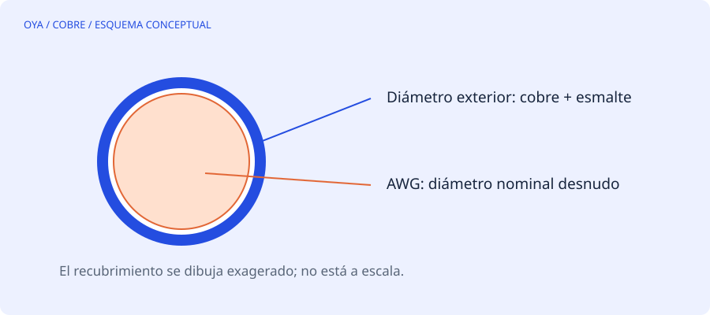

Qué describe el número AWG
AWG es una escala de calibre. Dentro de su tramo habitual, un número mayor corresponde a un conductor más fino. No es una medida directa en milímetros ni una sección en mm². La herramienta de esta web convierte calibres enteros de 0 a 40 mediante la relación geométrica de la escala.
El diámetro nominal desnudo en milímetros se obtiene con d = 0,127·92^((36−AWG)/39). Después se calcula A = πd²/4. La fórmula describe el conductor circular; no incluye esmalte, tolerancias de fabricación ni deformaciones por bobinado.
Una referencia pequeña y útil
| Calibre | Diámetro desnudo aproximado | Sección aproximada |
|---|---|---|
| AWG 18 | 1,024 mm | 0,823 mm² |
| AWG 20 | 0,812 mm | 0,518 mm² |
| AWG 22 | 0,644 mm | 0,326 mm² |
| AWG 24 | 0,511 mm | 0,205 mm² |
| AWG 26 | 0,405 mm | 0,129 mm² |
Estos valores redondeados sirven para interpretar el calibre. Para comprar alambre de bobinado se necesita también la especificación del aislamiento y su temperatura de trabajo, entre otros datos del fabricante.
Un micrómetro puede estar midiendo otra cosa
Si el instrumento apoya sobre el esmalte, mide diámetro exterior. Introducir ese valor como cobre desnudo sobreestima la sección conductora. En un hilo fino, unas centésimas de milímetro pueden representar un error significativo porque el área depende de d².
Una muestra retirada de una bobina dañada también puede estar aplastada, estirada o contaminada. Conviene medir en varias posiciones y reconocer si la sección continúa siendo circular. Retirar esmalte sin controlar el procedimiento puede quitar cobre y generar el error contrario. Si no es posible obtener una muestra fiable, registra la incertidumbre en vez de asignar un calibre exacto por aproximación visual.
No confundir AWG con SWG
AWG y SWG son escalas diferentes. Un número 22 sin indicar el sistema es una especificación incompleta. Tampoco debe tratarse un diámetro métrico próximo como una equivalencia exacta. Por ejemplo, comparar un hilo nominal de 0,65 mm con AWG 22 exige calcular su diferencia de sección; que ambos se vean parecidos no garantiza idéntica resistencia o llenado.
Cómo dejar una ficha de compra clara
Una solicitud útil identifica material, diámetro nominal desnudo o calibre con su sistema, grado de esmalte, clase térmica y norma o referencia del producto. Cuando se sustituyen varios hilos en paralelo, especifica también cuántos componen el conductor. Conserva el lote o la ficha técnica para que una reparación posterior no dependa de adivinar qué se instaló.
La conversión numérica es el primer paso. La decisión de sustitución necesita comprobar el diseño eléctrico y la ocupación real. El convertidor no recomienda un calibre por corriente ni determina una clase térmica.
Fuentes y alcance
Referencia de consulta: Escala American Wire Gauge. Los ejemplos numéricos son educativos y no describen un trabajo realizado.